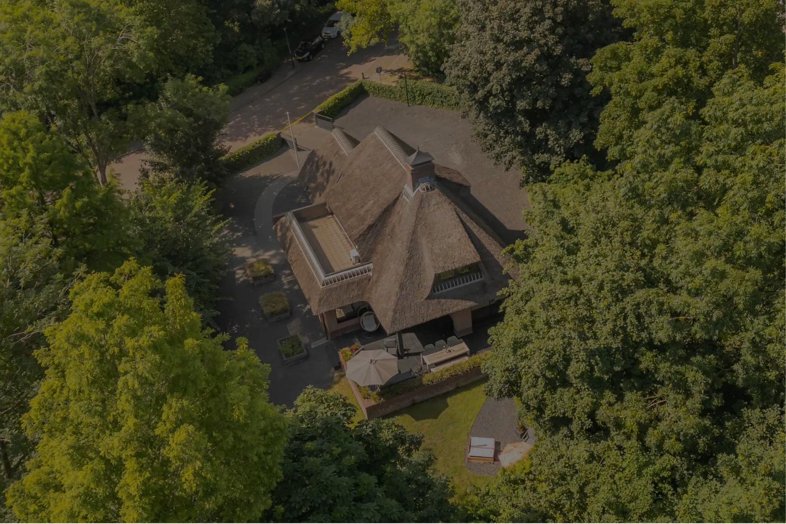
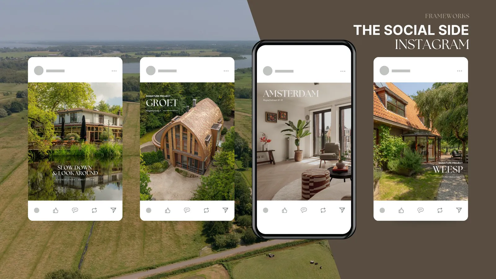
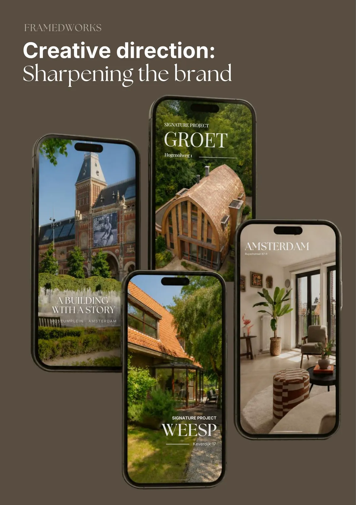
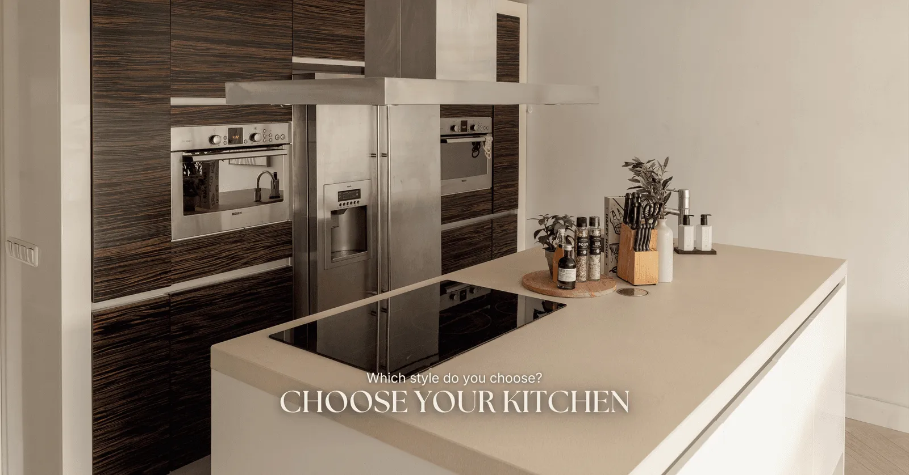
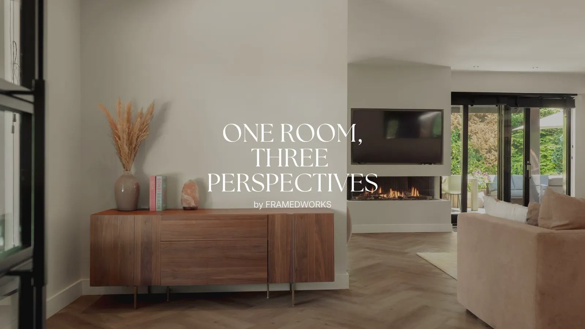
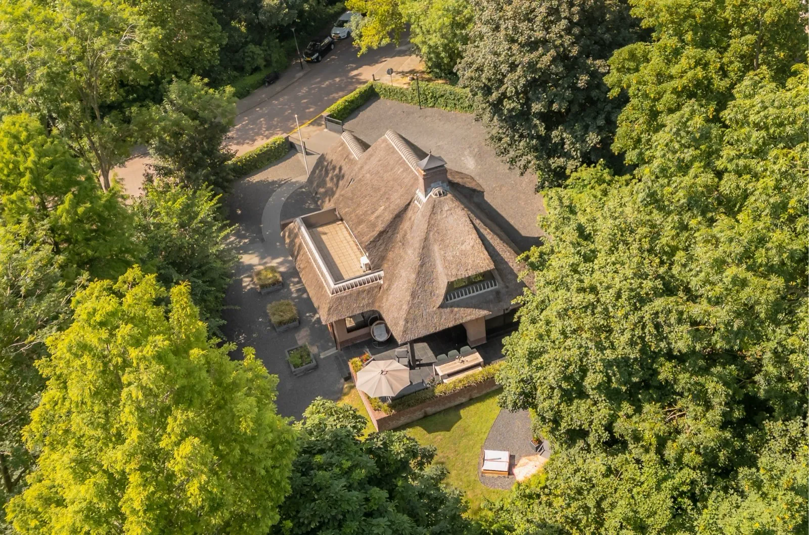

framedworks
Building a more considered social presence for a photography and videography studio, bringing visual storytelling, content strategy and creative direction together.
More than a beautiful image
Social media for a real estate photography studio should do more than showcase the final images. At Framedworks, I worked on shaping an Instagram presence that reflects the studio's visual approach, from cinematic property photography to the smaller, honest details of the process behind it.

A story behind every frame
Every property has its own character. Sometimes it's the way natural light moves through a room, the texture of a material, the lines of the architecture or the calm before a shoot starts.
My approach to Framedworks' social media was to bring these details into focus, moving beyond traditional property promotion towards a more editorial, photographic identity.
Building a visual language
A cohesive feed doesn't mean every post has to look the same. It means each format has a purpose, while the overall identity remains recognisable.



The creative focus
My work with Framedworks brought together the parts of social media I enjoy most: creative strategy, visual storytelling and the details that make a brand feel human. Photography, with a point of view.
- 01Content strategy and planning
- 02Visual storytelling
- 03Social media design
- 04Copywriting and brand voice
